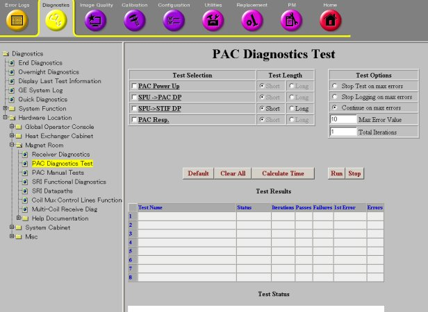
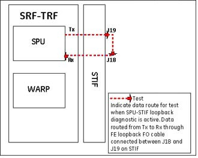

SPU to STIF Loopback
1 Diagnostic Link:
Diagnostics >> Hardware Location >> Magnet Room >> PAC Diagnostics Test
Figure 1. PAC Diagnostics

2 Purpose
This diagnostic tests the PAC fiber optic communication link from the SPU to STIF (CAM chassis). This test does not transmit any test data to the PAC and therefore does not verify communications beyond the STIF.
This test includes following part:
-
SPU -> STIF Loopback test
3 Components Tested
-
SPU
-
STIF
4 Requirements
Below list the procedures for test 1 and 2.
Test 2 requires an external loopback path between the J18 and J19 fiber optic ports on the STIF board (CAM chassis).
-
Remove the product FO line connector from J18 and J19 on the STIF board. Install the test FO loopback line (46-28728G1) between J18 and J19. See comments associated with the red dotted line in Figure 2. Run the SPU-STIF loopback diagnostic. This tests the integrity of the STIF board and the path between the SPU ( at the TRF board) and the STIF. Remove the test FO loopback line and connect the product FO lines when the testing is finished.
5 Block Diagram
Figure 2. SPU-STIF Loopback

6 Test Sequence
-
Click Calculate Time to get an estimate of the time it will take to run the selected diagnostics.
-
Click Run to initiate test.
Test causes the SPU on the TRF board to send serial data over the SPU-STIF Loopback link denoted by the red dotted lines in Figure 2. The loopback cable will return the data to STIF, which will return it to SPU.
General fiber optic cable tips:
-
Ensure that the fiber cables are fully seated in their sockets.
-
Ensure that the cable is not kinked or pinched. Sharply bent plastic fibers block the light path.
-
Inspect the ends of the cables and verify that the plastic light conductors are even with the ends of the gray or blue connectors. The fiber cable may be partially pulled out of the connector leaving a gap in the light's path.
7 Expected Results
Output values are judged pass or fail. In the event of failure, the details of the failure can be found in the GE System Log.
Although, in the case of errors you can click the 1st Error number to see the nature of the error, it is recommended that you view the GE System Log to view all the errors that were recorded.
If both tests fail, try running the PAC Manual tests to confirm that the PAC fiber optic cable driver on the STIF board is working. Also verify that your loopback fiber optic cable is not broken.
 |
|